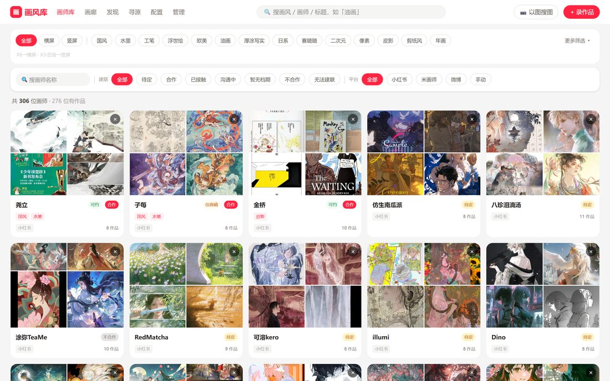
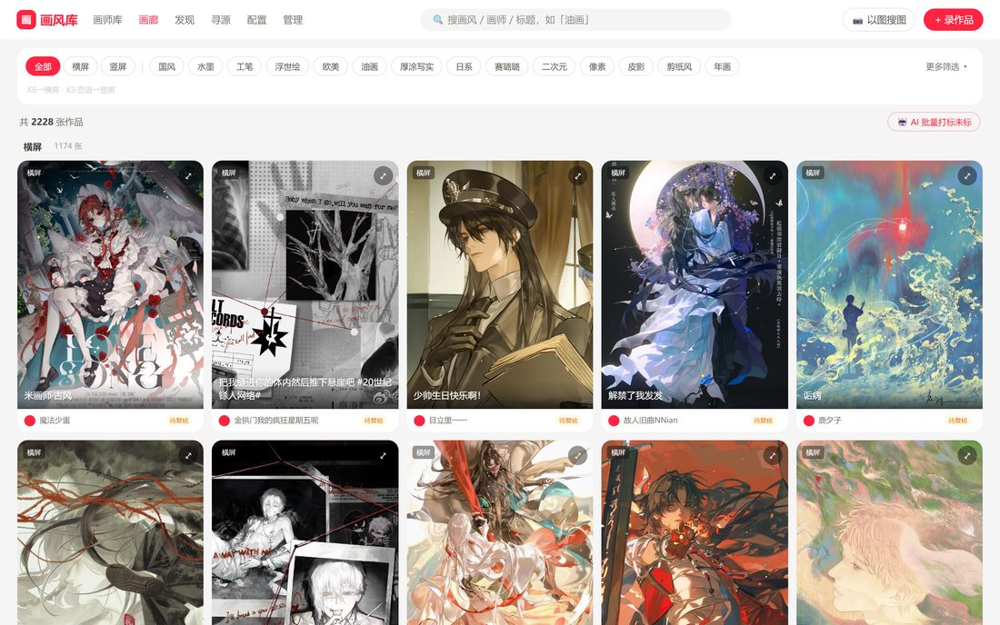
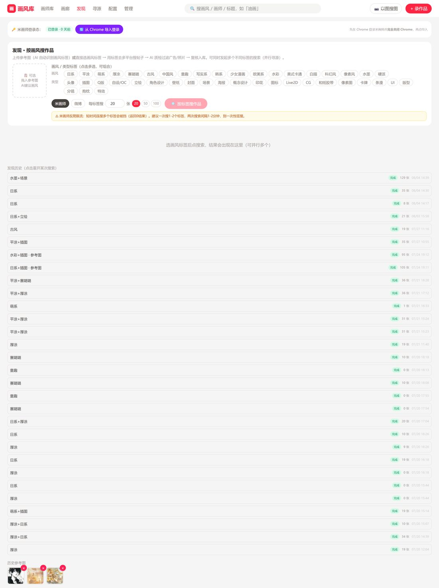
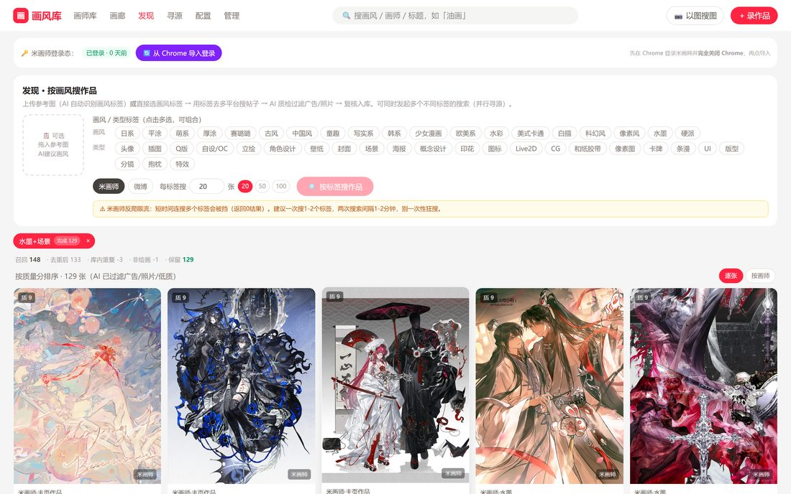
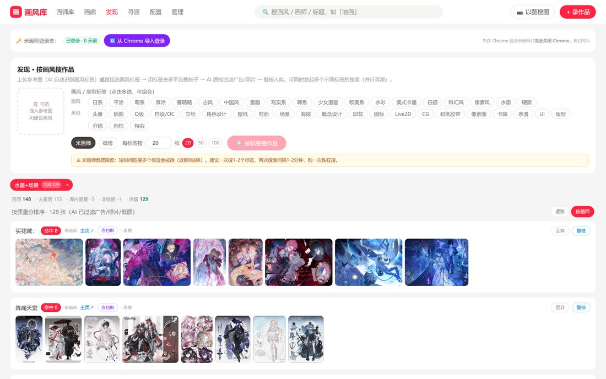
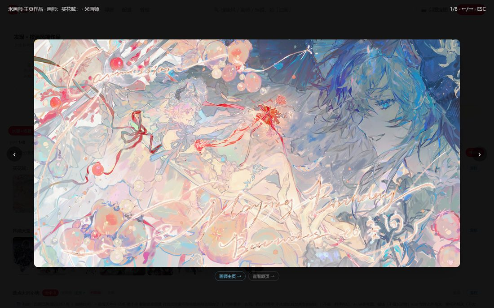
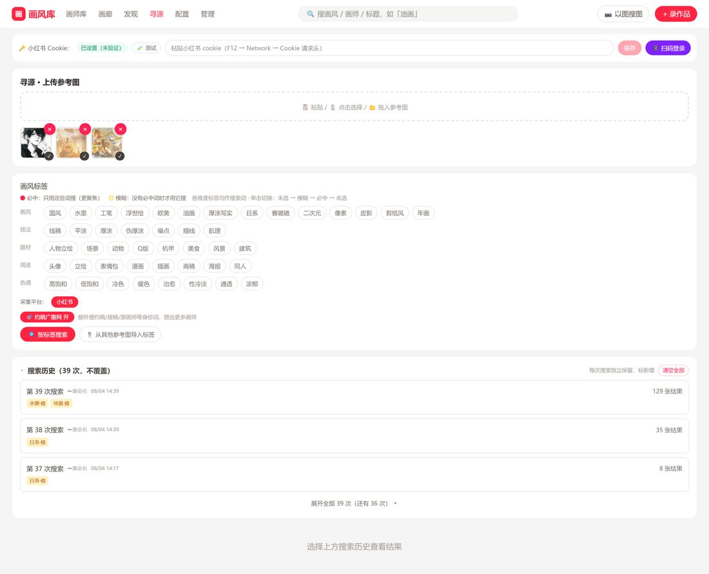
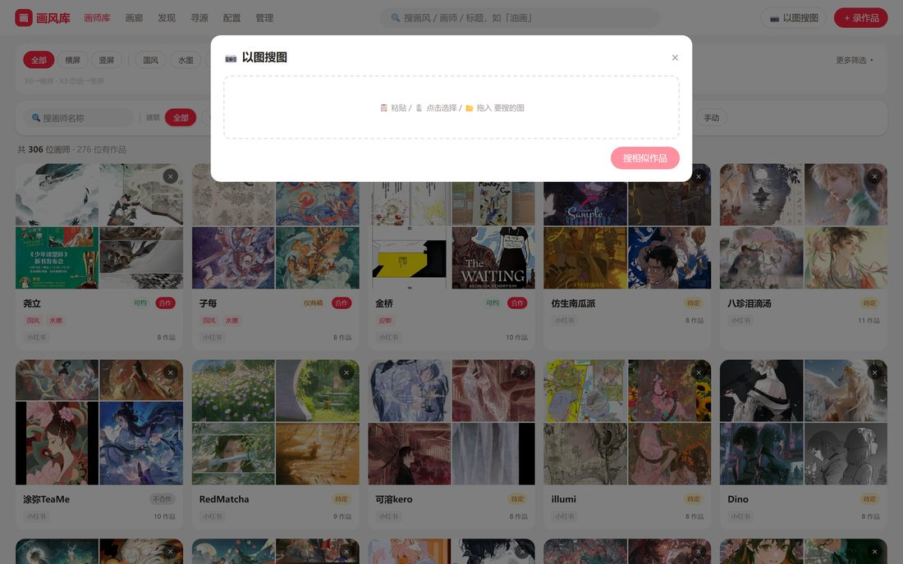
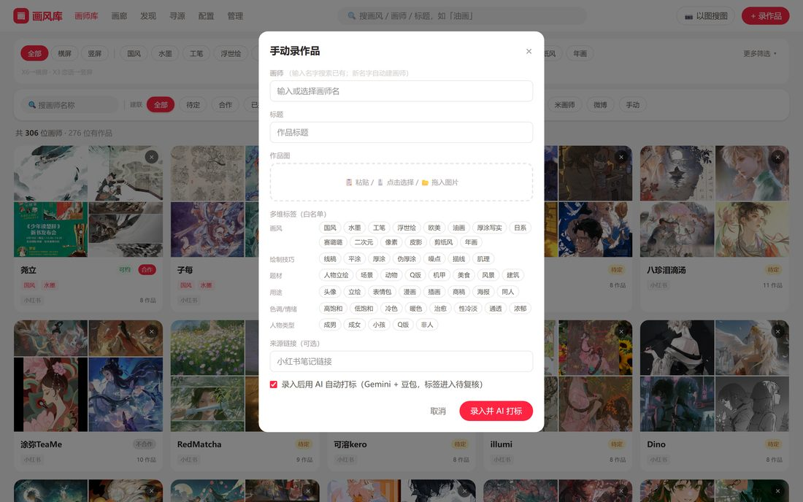
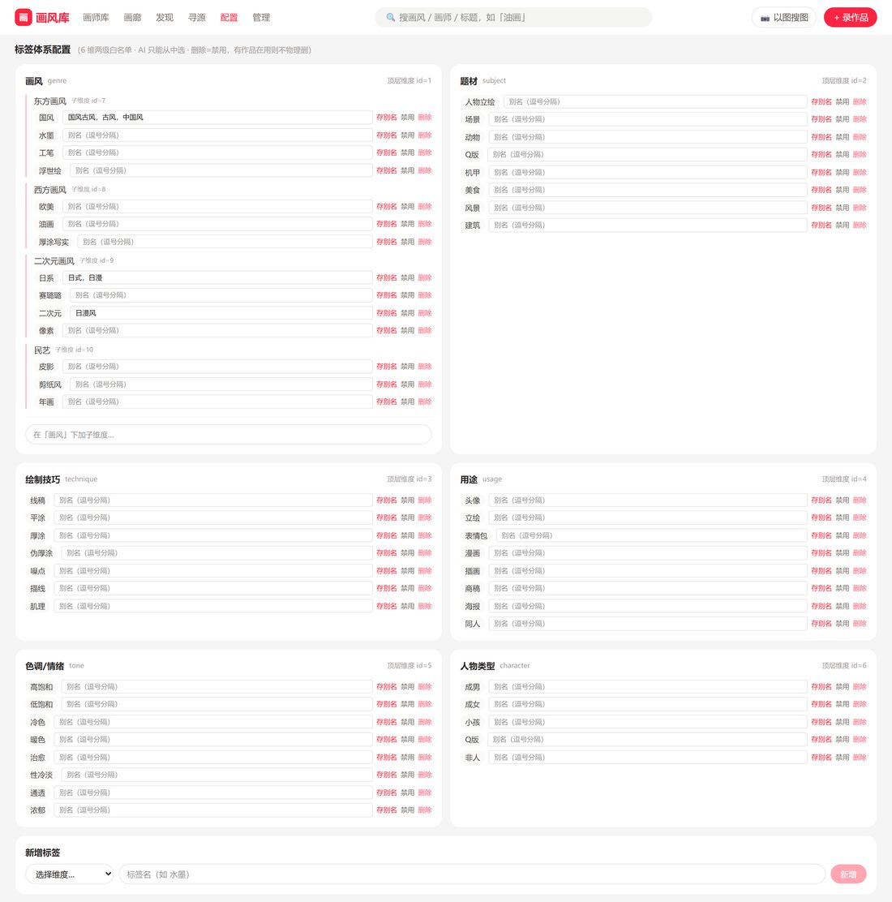

画风库 · 使用手册
一个「以画风找作品、反查画师、直接建联」的画师资源库。你可以浏览已收录的画师和作品，也可以主动去小红书 / 米画师按画风搜罗新画师，看中了一键入库。
访问地址：
http://10.10.142.59:3323（用浏览器打开，建议 Chrome）
目录
- 界面总览
- 画师库：浏览已收录的画师
- 画廊：按画风看作品
- 发现：从米画师按画风搜作品 → 入库
- 寻源：去小红书按画风找画师 → 建联
- 以图搜图 / 录作品
- 登录状态（首次必看）与标签配置
- 常见问题
1. 界面总览
顶部导航栏贯穿全站，随时可切换功能：
▲ 顶部导航栏
| 入口 | 作用 |
|---|
| 画师库 | 已收录画师的名录（首页），按建联状态 / 平台筛选 |
| 画廊 | 所有作品的瀑布流，按画风标签筛选 |
| 发现 | 去米画师按画风搜作品、反查画师、入库 |
| 寻源 | 去小红书按画风找画师、抓联系方式、建联 |
| 配置 | 画风标签体系设置 |
| 管理 | 数据维护（进阶） |
| 🔍 搜索框 | 快速搜画风 / 画师名 / 作品标题 |
| 📷 以图搜图 | 上传一张图，找库里画风相似的作品 |
| ＋ 录作品 | 手动录入一件作品 |
全站两大主线：「发现」= 米画师，「寻源」= 小红书。两者都是「按画风搜 → 挑画师 → 入库建联」，入库后就进入画师库 / 画廊。
2. 画师库：浏览已收录的画师
点导航「画师库」进入首页。这里是所有已收录画师的卡片名录，每张卡展示画师代表作缩略图、名字、建联状态、作品数。

▲ 画师库首页
你可以：
- 顶部画风标签（古风 / 日系 / 水墨 / 油画…）：只看画某种风格的画师。
- 建联状态筛选（待联系 / 合作中 / 已建联…）：管理你的约稿进度。
- 平台筛选（小红书 / 米画师…）：只看来自某平台的画师。
- 点任意画师卡 → 进入画师详情页，看其全部作品、编辑联系方式与建联备注。
3. 画廊：按画风看作品
点导航「画廊」。与画师库不同，画廊以单张作品为单位铺开，适合「我就想看这种画风的图」。

▲ 画廊：作品瀑布流
- 顶部选画风标签即可筛选；
- 点任意作品看大图；
- 每张图可反查它的画师。
4. 发现：从米画师按画风搜作品 → 入库
「发现」用来在米画师上按画风批量搜罗作品，再挑出满意的画师入库。这是最稳、最常用的一条线。
4.1 发起搜索

▲ 发现页：选标签发起搜索（顶部为米画师登录）
页面最顶部是米画师登录状态，点「从 Chrome 导入登录」完成登录——「查档期」和「入库」需要它（详见第 7 节）。
- 选画风 / 类型标签：如画风「日系 / 厚涂」、类型「立绘 / 头像」。可多选。
- 每标签召回数：默认
20，可调 30 / 50 / 100（越大越慢，也越容易被限流）。
- 点 按标签搜作品。搜索在后台跑，量大时要几分钟，可以离开稍后回来看。
⚠️ 别一次连搜太多标签，容易被米画师限流（表现为「召回 0 张」）。等 1–2 分钟再试。
4.2 看结果：逐张 / 按画师两种视图
结果区右上角可切换 逐张 / 按画师 视图。

▲ 逐张视图：作品瀑布流，每张可单独复核 / 丢弃 / 入库
逐张视图：每张图带质量分 / 相似度角标；画师↗ 跳米画师主页；复核（留下）、丢弃（不要），复核后按钮变 入库。

▲ 按画师视图（推荐找画师用）：一位画师一张卡
每张画师卡：
- 画师名、命中数、主页↗、画风标签；
- 查档期：抓这位画师在米画师的接稿档期 / 报价 / 要求（按需点，需登录态）；
- 右侧整组操作：复核 / 丢弃，复核后变 入库建联（把整位画师连作品一起收进库）；
- 点缩略图看大图：可用 ‹ › 或键盘 ←/→ 翻看这位画师名下的全部作品。

▲ 大图查看器：左右箭头翻看该画师全部作品，底部可跳主页 / 原页
4.3 入库两步走
- 复核：先把满意的画师 / 作品从「一级库」挑进「二级库」。
- 入库建联：把二级库的画师正式收进画师库（生成画师记录 + 作品）。之后就能在画师库里管理它、记录约稿进度。
5. 寻源：去小红书按画风找画师 → 建联
「寻源」用来在小红书上按画风找画师。它比发现更进一步：会爬画师主页判断「是不是画师号」，还能抓到微信 / QQ / 档期等联系方式。

▲ 寻源页：顶部小红书登录、上传参考图、画风标签、搜索历史
5.1 准备：小红书登录
页面顶部是小红书 Cookie 状态。若显示未登录 / 过期，点 📱 扫码登录（弹出二维码，用小红书 App 扫），或粘贴 Cookie 后点保存。没有登录态会搜不到结果。
5.2 发起寻源
- （可选）上传参考图：系统会自动识别其画风标签。
- 选画风标签：支持画风 / 技法 / 题材 / 用途 / 色调 / 人物多维标签，点一下选中。
- 约稿广撒网（默认开）：同时用「约稿 / 接稿 / 原画师」等身份词一起搜，能捞到更多在接单的画师。
- 点 按标签搜索。
5.3 看结果 + 建联
结果按画师聚合成卡片，每张卡展示这位画师的代表作、AI 判定的画作占比、画风、以及抓到的联系方式 / 档期 / 简介。
每张画师卡可以：
- 丢弃 / 复核 → 入库建联（两步入库，同发现）；
- 🔍 查米画师同名：用这位画师的小红书昵称去米画师搜同名账号。找到后会展开候选画师（头像 / 认证 / 接单信誉 / 档期 + 米画师样图），把米画师作品和左边的小红书代表作对图，人工确认是不是同一个人——因为撞名不代表就是同一人，所以不会自动关联，由你拍板。
底部有搜索历史，点任意一次记录可回看当时结果；「继续搜索更多」会在同标签下接着捞没查过的画师。
6. 以图搜图 / 录作品
📷 以图搜图（顶栏）：上传一张参考图，系统按视觉相似度在库里找画风接近的作品。

▲ 以图搜图
＋ 录作品（顶栏）：手动录入一件作品——填图片、画师、来源等，适合零散补录。

▲ 手动录作品
7. 登录状态（首次必看）与标签配置
7.1 登录状态在哪里
发现（米画师）和寻源（小红书）都依赖登录态，登录态会过期，过期后会搜不到 / 查不了档期。两个登录入口分别在各自页面顶部，不在「配置」页：
- 小红书登录 → 在「寻源」页顶部：显示 Cookie 状态，点 📱 扫码登录 或粘贴 Cookie 保存。
- 米画师登录 → 在「发现」页顶部：点 从 Chrome 导入登录 或扫码。发现里的「查档期」「入库」依赖它。
记住：搜不到结果 / 查档期失败，第一件事就是回对应页面顶部看登录态是不是过期了，重登一次即可。
7.2 「配置」页 = 标签体系管理（进阶）
导航「配置」是画风标签体系的管理页，维护画风 / 技法 / 题材 / 用途 / 色调 / 人物各维度下的标签白名单——发现、寻源、画廊筛选用的标签都来自这里。日常使用一般不用改，需要新增 / 调整画风词时才进来。

▲ 配置页：画风标签体系管理
8. 常见问题
| 现象 | 原因 / 解决 |
|---|
| 发现「召回 0 张」 | 多半被米画师限流。等 1–2 分钟，别一次连搜多个标签。 |
| 寻源搜不到画师 / 登录墙 | 小红书登录态过期 → 到寻源页顶部重新扫码登录。 |
| 「查档期」失败 | 米画师登录态过期 → 到发现页顶部重新登录；或稍后重试。 |
| 每位画师只有一两张图 | 发现已自动补抓画师主页作品；若仍偏少，是该画师主页作品本就不多。 |
| 页面点了没反应 / 看不到新功能 | 浏览器缓存旧版本，按 Ctrl+F5 强制刷新。 |
| 米画师同名候选找不到人 | 两个平台可能用了不同昵称，纯按名字搜不到属正常；对图确认更可靠。 |